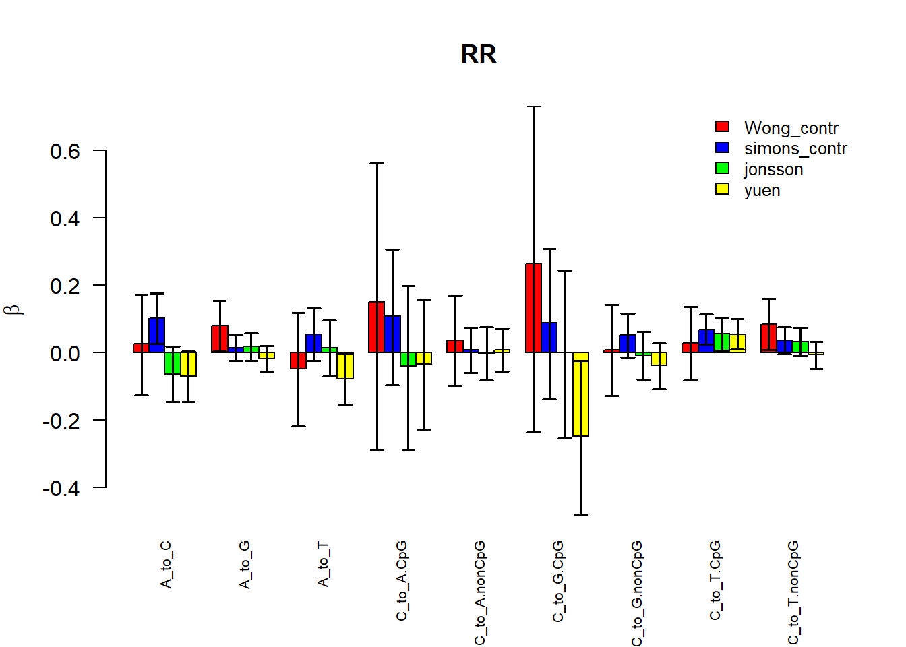

De novo mutations of ASD
Shengtong Han
Samples
Case Samples
| index | Samples | # mutations | # subjects |
|---|---|---|---|
| 1 | Jiang_cases_DNM.bed | 2,091 | 32 |
| 2 | Michaelson_cases_DNM.bed | 581 | 10 |
| 3 | Yuen_NM2015_cases_DNM.bed | 9,381 | 162 |
| 4 | Wu_cases_DNM.bed | 1,915 | 32 |
| 5 | Kong_cases_DNM.bed | 4,930 | 78 |
Jiang_cases_DNM.bed Detection of clinically relevant genetic variants in autism spectrum disorder by whole-genome sequencing, AJHG 2013.
Michaelson_cases_DNM.bed Whole-genome sequencing in autism identifies hot spots for de novo germline mutation, cell, 2012
Yuen_NM2015_cases_DNM.bed Whole-genome sequencing of quartet families with autism spectrum disorder, nature medicine, 2015
Wu_cases_DNM.bed [unpublished]
Kong_cases_DNM.bed Rate of de novo mutations and the importance of father’s age to disease risk, nature, 2012
Wong_NC_2016_693_control_SNV- Control sample
| index | Samples | # mutations | # subjects |
|---|---|---|---|
| 1 | Wong_NC_2016_693_control_SNV.bed | 27,092 | 693 |
| 2 | A->C | 990 (3.65%) | |
| 3 | A->G | 3,812 (14.07%) | |
| 4 | A->T | 815 (3.01%) | |
| 5 | C->G | 1,274 (4.70%) | |
| 6 | C->T | 5,314 (19.61%) | |
| 7 | C->A | 1,298 (4.79%) |
There are 585,017,944 C’s and 844,868,045 A’s in hg19.
Jonsson
De novo WGS of Jonsson data has 1548 controls.
| index | mutation type | # mutations | |
|---|---|---|---|
| 1 | A->C | 3,582 | |
| 2 | A->G | 13,477 | |
| 3 | A->T | 3,331 | |
| 4 | C->G | 4,822 | |
| 5 | C->T | 21,220 | |
| 6 | C->A | 3,862 |
Simons-control
WGS Simons control data
| index | mutation type | # mutations | |
|---|---|---|---|
| 1 | A->C (+ T->G) | 3,899+3,900=7,799 | |
| 2 | A->G (+ T->C) | 15,083+14,919=30,002 | |
| 3 | A->T (+ T->A) | 3,664+3,743=7,407 | |
| 4 | C->G (+ G->C) | 5,393+5,308=10,701 | |
| 5 | C->T (+ G->A) | 23,977+23,907=47,884 | |
| 6 | C->A (+ G->T) | 5,404+5,652=11,056 |
Yuen data
Yuen data
| index | mutation type | # mutations | |
|---|---|---|---|
| 1 | A->C | 4,239 | |
| 2 | A->G | 15,893 | |
| 3 | A->T | 4,086 | |
| 4 | C->G | 5,433 | |
| 5 | C->T | 24,418 | |
| 6 | C->A | 5,942 |

Sample summary
| index | mutation type | Wong-control | Jonsson | simons-control | Yuen |
|---|---|---|---|---|---|
| 1 | A->C | 990 (3.65%) | 3,582 | 3,899 | 4,239 |
| 2 | A->G | 3,812 (14.07%) | 13,477 | 15,083 | 15,893 |
| 3 | A->T | 815 (3.01%) | 3,331 | 3,664 | 4,086 |
| 4 | C->G | 1,274 (4.70%) | 4,822 | 5,393 | 5,433 |
| 5 | C->T | 5,314 (19.61%) | 21,220 | 23,977 | 24,418 |
| 6 | C->A | 1,298 (4.79%) | 3,862 | 5,404 | 5,942 |
Wong data: /project2/xinhe/Shengtong/mutation_rate/mutation.rate/Wong_NC_2016_693_control_SNV_with_allele_info.txt
Jonson: /project2/xinhe/Shengtong/mutation_rate/mutation.rate/Jonsson_Yuen2017/comb_SNPs_Jonsson
Yuen: /project2/xinhe/Shengtong/mutation_rate/mutation.rate/Jonsson_Yuen2017/comb_SNPs_Yuen
Simons: /project2/xinhe/Shengtong/mutation_rate/mutation.rate/Simons_WGSWong data: New observations on maternal age effect on germline de novo mutation, nature communications, 2016
Jonson, Whole genome characterization of sequence diversity of 15,220 Icelanders, Scientific Data, 2017
Simons: Genomic Patterns of De Novo Mutation in Simplex Autism, cell, 2017
Folder: /project2/xinhe/Shengtong/mutation_rate/mutation.rate/Simons_WGS/controls
Data for 100bp window: table.ASCWGS_20180504.WGS1902_hg19_controls_SNV_remove_recurrent_mutation.ExpObsVar.bed.bed.add.100bp
Each row shows data of one 100bp window. Each column: chromosome, start, end, observed DNM count in the window, and fitted mutation rate in the window. Those counts are obtained by combing all mutation types together
chr1 0 100 0 0
chr1 100 200 0 0
chr1 200 300 0 0
chr1 300 400 0 0
chr1 400 500 0 0
chr1 500 600 0 0
chr1 600 700 0 0
chr1 700 800 0 0
chr1 800 900 0 0
chr1 900 1000 0 0mutaton count by mutationt type
Data processing and model fitting
Data discretization and categorization
- Continuous features are converted into binary discrete variables.
- use R function Split to cluster windows with similar binary (original and converted) features.
Model fitting for each mutation type separately
There are two ways to fit the model, GLM and optims. Both methods give the same esrimate either for whole genome or categorized windows as whown in simulations. Here only present the result by GLM with categorization,
GLM (use R function GLM) with offset term
\[y\sim Pois( e^{\mu+X^T\beta})\]
With categorization, response \(y\) is the total number of mutations from all windows within a category and covariate feature
offset term uses 7-mer ERV baseline mutation rate, which is sum of 7-mer mutation rate in a window for each mutation type, e.g. for A->C, sum over all 7-mer mutation rate with A->C in the center.
intercept is included and the same across all categories
confidence interval could be obtained as well
ERV baseline mutation rate
| index | mutation type | mutations rate | |
|---|---|---|---|
| 1 | A->C | \(1.6627\times 10^{-9}\) | |
| 2 | A->G | \(6.1805 \times 10^{-9}\) | |
| 3 | A->T | \(1.5633 \times 10^{-9}\) | |
| 4 | C->G | \(2.8075 \times 10^{-9}\) | |
| 5 | C->T | \(1.2885 \times 10^{-8}\) | |
| 6 | C->A | \(3.3977 \times 10^{-9}\) |
Whole genome-fit 14 features simultaneously
The window length is set 100 bp. Use GLM to fit the model, and stated otherwise.

Fit 14 covariate features simultaneously.
95% confidence interval by GLM is often big.
Parameter estimate comparison
Parameter estimate with variable selection
- compute the ratio of confidence interval over absolute value of estimated coefficient, rank them, and choose maximum of the top 25% quantile or 1. That is at least there are 25% covariate features with smallest ratios are selected as significant features.
methylation feature only
- base level methylation are averaged in a window as window level methylation, then converted into binary variable with mean as threshold to fit the model
- regress mutation count on methylation feature only
- parameter estimated (\(\hat{\beta}\)) + 95% CI (vertical line)
- methylation samples are downloaded from GSE63818
- methylation samples are strand specific. Plus strand data uses plus strand methylation sample and the same for minus strand.
- methylation: GSE63818_Brain_5W_embryo1_methylation
- For each mutation type, \(\widehat{\beta}\) is nearly identical across difference methylation sample.
Session information
sessionInfo()## R version 4.1.2 (2021-11-01)
## Platform: x86_64-w64-mingw32/x64 (64-bit)
## Running under: Windows 10 x64 (build 18363)
##
## Matrix products: default
##
## locale:
## [1] LC_COLLATE=English_United States.1252
## [2] LC_CTYPE=English_United States.1252
## [3] LC_MONETARY=English_United States.1252
## [4] LC_NUMERIC=C
## [5] LC_TIME=English_United States.1252
##
## attached base packages:
## [1] stats graphics grDevices utils datasets methods base
##
## other attached packages:
## [1] forcats_0.5.1 stringr_1.4.0 dplyr_1.0.7 purrr_0.3.4
## [5] readr_2.1.1 tidyr_1.1.4 tibble_3.1.6 ggplot2_3.3.5
## [9] tidyverse_1.3.1 ape_5.6-1 gplots_3.1.1 RColorBrewer_1.1-2
## [13] kableExtra_1.3.4 knitr_1.37
##
## loaded via a namespace (and not attached):
## [1] httr_1.4.2 jsonlite_1.7.3 viridisLite_0.4.0 modelr_0.1.8
## [5] gtools_3.9.2 assertthat_0.2.1 highr_0.9 cellranger_1.1.0
## [9] yaml_2.2.2 pillar_1.6.5 backports_1.4.1 lattice_0.20-45
## [13] glue_1.6.0 digest_0.6.29 rvest_1.0.2 colorspace_2.0-2
## [17] htmltools_0.5.2 pkgconfig_2.0.3 broom_0.7.11 haven_2.4.3
## [21] scales_1.1.1 webshot_0.5.2 svglite_2.0.0 tzdb_0.2.0
## [25] farver_2.1.0 generics_0.1.1 ellipsis_0.3.2 withr_2.4.3
## [29] cli_3.1.1 magrittr_2.0.1 crayon_1.4.2 readxl_1.3.1
## [33] evaluate_0.14 fs_1.5.2 fansi_1.0.2 nlme_3.1-153
## [37] xml2_1.3.3 tools_4.1.2 hms_1.1.1 lifecycle_1.0.1
## [41] munsell_0.5.0 reprex_2.0.1 compiler_4.1.2 jquerylib_0.1.4
## [45] caTools_1.18.2 systemfonts_1.0.3 rlang_0.4.12 grid_4.1.2
## [49] rstudioapi_0.13 labeling_0.4.2 bitops_1.0-7 rmarkdown_2.11
## [53] gtable_0.3.0 DBI_1.1.2 R6_2.5.1 lubridate_1.8.0
## [57] fastmap_1.1.0 utf8_1.2.2 KernSmooth_2.23-20 stringi_1.7.6
## [61] parallel_4.1.2 Rcpp_1.0.8 vctrs_0.3.8 dbplyr_2.1.1
## [65] tidyselect_1.1.1 xfun_0.29This R Markdown site was created with workflowr